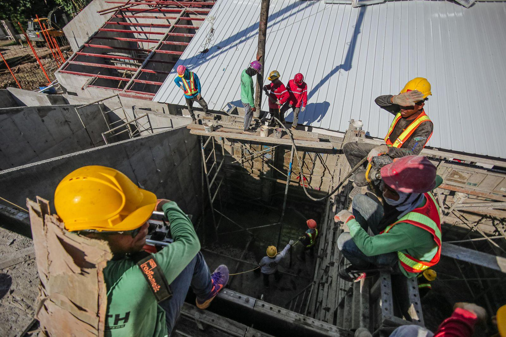
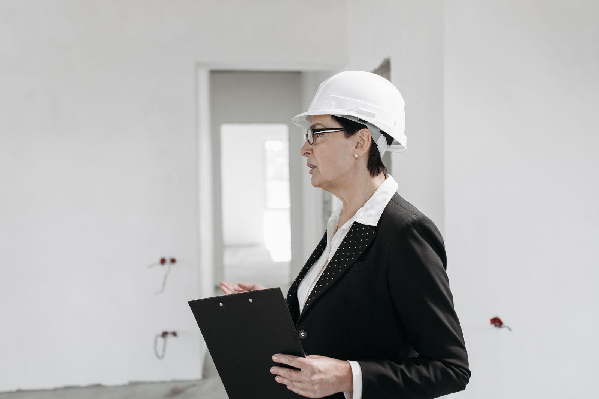

Priser
Tydliga priser utan överraskningar.
Vad det kostar att leda bort vattnet
Rännrensning
Rensning av rännor och stuprör med foto före och efter.
1 950 krper tillfälle, villa- Rensning av alla rännor
- Kontroll av stuprör och brunnar
- Foton i mejlen samma dag
- Lövsilar som tillval
- Populärast
Rännbyte villa
Nya rännor och stuprör i lackerad stålplåt.
fr. 690 krper löpmeter, före ROT- Demontering av gamla rännor
- Nya rännkrokar och rännor
- Stuprör med utkastare
- Provspolning efter montage
Skyfallsanalys
Beräkning och rapport för föreningar och fastighetsägare.
fr. 12 500 krper fastighet- Mätning av alla takytor
- Kamerainspektion av ledningar
- Karta över stuprör och brunnar
- Åtgärdsförslag i prioritetsordning
Fler priser
| Filmning av stupröranslutning | fr. 2 900 kr |
|---|---|
| Nytt stuprör inkl. utkastare | fr. 2 400 kr |
| Kopparränna | fr. 1 290 kr/m |
| Lövsilar, villa | fr. 1 400 kr |
| Stenkista 1 m³ | fr. 18 000 kr |
| Byte av takbrunn, platt tak | fr. 6 800 kr |
Alla priser inklusive moms.
Mät, föreslå, montera, spola
- 1

Mätning
Vi mäter takytor, räknar flöden och filmar ledningarna om vattnet inte rinner undan.
- 2

Förslag
Du får ett förslag med dimensioner, material och var vattnet ska ta vägen.
- 3

Rännbyte
Plåtlaget byter rännor och stuprör, anläggarlaget tar det som ligger under mark.
- 4

Provspolning
Vi spolar hela systemet med vatten från taket och kontrollerar att allt rinner rätt.
Om rännor, stuprör och dagvatten
Hittar du inte svaret? Ring eller mejla oss.
Hur vet jag om mina rännor är för små?
Om vatten rinner över kanten vid kraftigt regn, eller om marken nedanför är urgröpt, är de troligen för små eller har för få stuprör.
Vilket material håller bäst vid kusten?
Koppar och aluminium tål salt bäst. Lackerad stålplåt fungerar, men behöver ses över oftare inom en kilometer från havet.
Får jag koppla bort stupröret från den kommunala ledningen?
Ofta ja, och vissa kommuner uppmuntrar det. Vi kontrollerar vad som gäller och att marken klarar att ta emot vattnet.
Hur ofta ska rännorna rensas?
Minst en gång om året, och två gånger om du har stora träd nära huset.
Ger rännbyte ROT-avdrag?
Ja, på arbetskostnaden för rännbyten och rensning. Markarbeten på tomten ger också ROT.
Lägger ni nya tak?
Nej, vi arbetar bara med takavvattning och dagvatten. Behöver taket bytas samarbetar vi gärna med din takläggare.